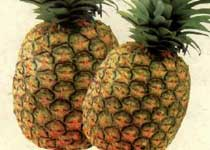

骆驼推荐特产
-
红豆
南宁的红豆树几乎是三步一棵、十步一行， 随处可拾。红豆分红豆和相思豆两种，街上卖的...
-
芒果
南宁盛产芒果，这里产的芒果内质细嫩，味道香甜，皮 薄多汁，是高级的贡果。芒果果实椭...
-
甘蔗
甘蔗分果蔗和糖蔗两大类。果蔗作水果食用，精蔗是制糖原料。远销海外的榴花牌优质白砂...
-
荔枝
广西是荔枝的故乡，荔枝果肉晶莹透明，味甘甜多汁，为著名的南国佳果，可制罐头、荔枝...
-

菠萝
菠萝又名“凤梨”，为南宁主要果品。菠萝富含发热量高的糖类和人体不可缺少的钙、铁、...
-
壮锦
最早产于唐宋年间的壮锦是南宁当地工艺品中最为出名的，带有浓郁的地方民族风格。壮锦...
-
三花酒
米香型小曲白酒，酿造历史可追溯到南宋。原由“师司公厨”酿成，后传入民间。因蒸熬三...
-
荔浦芋
因原出于荔浦县而得名，剖开芋头可见芋肉布满细小红筋，类似槟榔花纹，故又称槟榔芋。...
-
罗汉果
其块根形似佛肚。瓜果椭圆形或球形, 表面生有淡黄色柔毛，桂林永福和临桂两县所产最为...
-
圆枝腐竹
豆制品，其形似干竹枝而名。桂林生产腐竹已有千多年历史。得益于漓江和桃花江水泡浸大...
-
马蹄
马蹄，又称荸荠。市区卫家渡、王家村、东山和窑头出产的最著名。桂林马蹄皮雹肉厚、色...
-
 柿饼
柿饼
阳朔柿饼是阳朔县的四大名果之一，栽培历史悠久，其果呈心脏形，果顶似牛心。其果质肉...